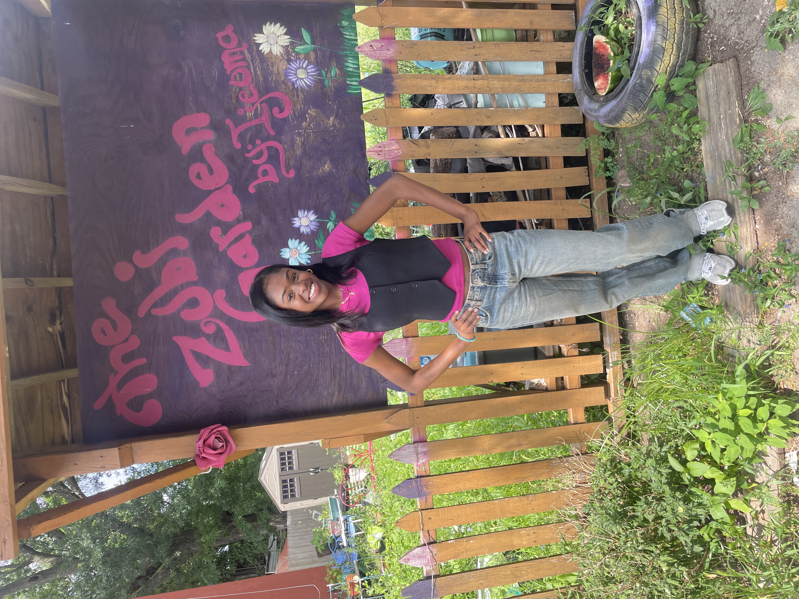

Rutgers Newark Bodega Project
Building a sustainable, data-informed, and hyperlocal food supply chain linking farms to bodegas.
About the Project
Building on Team Flow Chain's groundbreaking work, this community-driven initiative aims to create a resilient, sustainable food supply chain linking local farms and school gardens directly to Newark's bodegas. At the heart of this model is the belief that food access is a fundamental right for everyone.
Supported by Bergen Community College and Rutgers Business School-Newark, the project connects education with urban economic development. It began under Dr. Kevin Lyons, whose sustainable logistics vision sparked the partnership.
Generously funded by the USDA and NIFA, under the leadership and coordination of Dr. Edward Sanchez, this initiative emphasizes experiential learning and leadership training in key areas such as agriculture, business, food systems, and environmental science, empowering students and communities alike.
Project Tools
Turn field data into action
See Newark's fresh and fast food landscape
Compare access patterns, Rutgers locations, heatmaps, clusters, and neighborhood context in one interactive view.
Open mapTranslate supply chain signals into decisions
Model inventory, delivery, warehouse, and route performance for a sustainable farm-to-bodega network.
Build KPIsProject Highlights



Mission & Objectives
Mission
Empower Bergen students through practical training and real-world experiences, equipping them with essential skills to design, implement, and maintain sustainable urban food supply chains.
Objectives
- Develop a viable, replicable prototype supply chain model connecting local farms and community gardens with Newark bodegas.
- Foster ongoing research and innovation in sustainable urban logistics and agriculture.
- Strengthen community relationships and enhance local food security through education, collaboration, and resource sharing.
Key Performance Indicators (KPIs)
Team Flow Chain's experience highlighted the critical importance of tracking key performance metrics. The following indicators help evaluate and ensure ongoing success and sustainability:
- Inventory Shortage: Minimizing losses due to theft, damage, fraud, or miscounts.
- Supplier Lead Time: Reducing the duration from placing orders to product shipment.
- Warehouse Utilization: Optimizing the ratio of used to available warehouse space.
- Cold Chain Compliance: Ensuring safe and reliable temperature control throughout transportation.
- Delivery Time Variability: Narrowing gaps between expected and actual delivery times.
- Delivery Accuracy: Maximizing the percentage of on-time, undamaged deliveries.
Urban Agriculture: Indoor Vertical Farming
- Year-Round Production: Enables continuous farming independent of weather and seasonal changes.
- Local Food Security: Strengthens food systems by significantly reducing transportation emissions and reliance on distant suppliers.
- Controlled Environments: Controlled environments allows for measuring TDS (total dissolved solids) of nutrients in water, easy managing of pests, as well as a controlled light source.
- Frequent Harvests: Hydroponic vertical farming allows selected crops to grow faster, leading to more frequent harvests.
Meet Team Flow Chain
Dr. Edward Sanchez
Program Director
Kevin Kim
Bodega Supply Chain Specialist

Jensy Jimenez
Lead Student Coordinator, Full-Stack Web Developer, Data Analyst
Michael La Torre
Community Outreach & Business Development Coordinator
Estrella Luna
Plant Biology Expert & Data Collection Specialist
Esteban Martinez
Urban Data Collector and Field Researcher
Riley O'Sullivan
Marketing Specialist & Social Media Ambassador
Shanandra Ubiera
Community Communications Lead & Translator
Yulissa Aguila
Computer Science Administrator & Social Media Manager